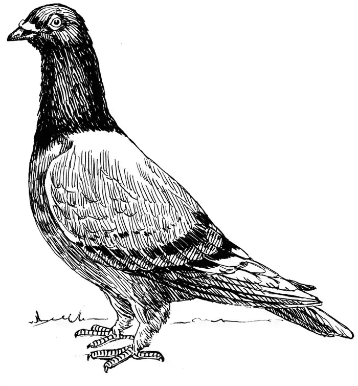
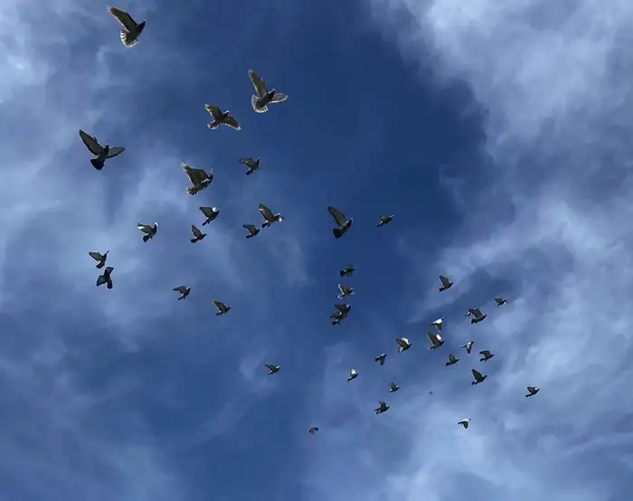
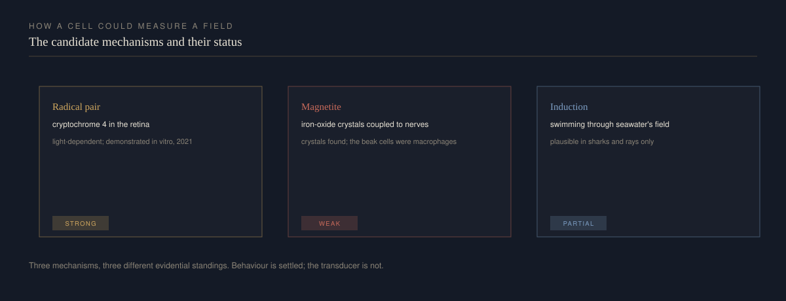

The behaviour
The evidence is behavioural and old. European robins orient in the right direction under a magnetic field of the correct inclination, and stop doing so when the field is rotated by a magnet. Newts, sea turtles, salmon, honeybees, monarch butterflies, mole rats and some bacteria all show magnetic responses in controlled experiments. The behaviour is robust, replicated across labs, and not seriously disputed.
Maps, diagrams and images





The complication is that the avian compass appears to be light-dependent and to fail under certain radio-frequency noise — which is a clue about mechanism, and an awkward one for the simplest explanations.
The candidate mechanisms
First, magnetite: crystals of iron oxide in tissue, acting as tiny compass needles coupled to a nerve. Magnetic crystals have been found in many organisms, but the sensory cells in bird beaks once claimed to house them turned out to be iron-rich macrophages, part of the immune system, which badly weakened the strongest version of this account.
Second, the radical pair: a photochemical reaction in the retina in which a magnetic field alters the spin state of a transient pair of radicals, changing the yield of a signalling product. The candidate protein is cryptochrome 4, found in migratory birds' retinas, and in 2021 a team showed that the zebra finch version is magnetically sensitive in vitro. That is a mechanism, not yet a demonstrated sense.
Third, induction: in marine animals, the field generated by swimming through a conductor — seawater — could be detected electrically. Plausible for sharks and rays, which have electroreceptors, and not applicable to a bird.
Documented: magnetic orientation behaviour in dozens of species, replicated and robust.
Strong evidence: a light-dependent, cryptochrome-based mechanism in migratory birds, demonstrated in vitro.
Not settled: which cells transduce the signal in vivo, and how a chemical signal becomes a neural one.
Debunked: the specific claim that iron crystals in the pigeon beak are the magnetoreceptors.
Why it is here
Because it is a case where the phenomenon is certain and the explanation is partial, and because popular accounts routinely present the mechanism as solved. It also explains something the archive gets asked about: whether humans have a magnetic sense. The evidence is weak and contested, and no one has demonstrated a behavioural effect that survives replication.
Sources for this page
- Wikipedia, “Magnetoreception” — behaviour, mechanisms and disputesen.wikipedia.org
- Xu et al. (2021), Nature — cryptochrome 4 is magnetically sensitivedoi.org
- Wikipedia, “Cryptochrome” — the protein family and its rolesen.wikipedia.org
- Wikipedia, “Animal navigation” — how magnetic cues sit among othersen.wikipedia.org
Open resources on this topic
- BookA Remark on Human Magnetoreception (A Scientific Tragedy in Two Pages) — 4bd3ssamad@gmail.com · 2026 (Internet Archive, free to read)
- BookMagnetite biomineralization and magnetoreception in organisms : a new biomagnetism — 1985 (Internet Archive, free to read)
- BookDecoherence in the chemical compass: The role of decoherence for avian magnetoreception — ['Markus Tiersch', 'Hans J. Briegel'] · 2012 (Internet Archive, free to read)
- PapersOpen-access articles: DOAJ · PubMed Central · Internet Archive Scholar
- BooksPublic-domain and borrowable copies: Open Library · Project Gutenberg · Google Books
Cite this page
Momin, S. (2026). Magnetoreception. The Larger World Archive. https://drsamonline.github.io/LARGE_GLOBE/magnetoreception.htmlMomin, Sohil. “Magnetoreception.” The Larger World Archive, 2026, https://drsamonline.github.io/LARGE_GLOBE/magnetoreception.html.Momin, Sohil. “Magnetoreception.” The Larger World Archive, 2026. https://drsamonline.github.io/LARGE_GLOBE/magnetoreception.html.@misc{magnetoreception2026magnetoreception,
author = {Momin, Sohil},
title = {Magnetoreception},
year = {2026},
howpublished = {The Larger World Archive},
url = {https://drsamonline.github.io/LARGE_GLOBE/magnetoreception.html},
note = {Last reviewed 20 November 2026}
}Last reviewed 20 November 2026 · Corrections policy · this page is not peer reviewed